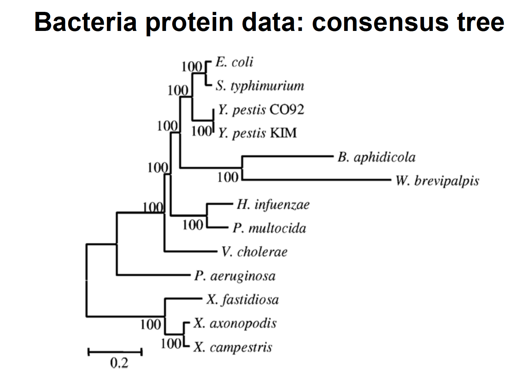

Home | Download repository
Tutorial 1: Inferring phylogenies using maximum likelihood
These exercises were prepared by Maria Anisimova
1) Basic ML inference: Run PhyML (the menu mode). Set the model to HKY+Gamma, estimating the transition/transversion ratio and the alpha parameter of the Gamma distribution by maximum likelihood (ML).
Run the program twice: first estimating the nucleotide frequencies by ML and the second time estimating them empirically from data.
- Do you see much difference in the tree?
- In the likelihood value (stat file)?
- Which option is best and why do you think so?
2) ML Tree vs. starting tree: By default PhyML builds a BioNJ tree and uses this tree as a starting tree. Run PhyML without the tree-search, so that all model parameters are optimized on the BioNJ tree.
- Compare the ML and the BioNJ trees and the model estimates (HKY+Gamma) obtained for the two trees.
- Compare the likelihood of the ML and NJ trees.
- What do you observe and why?
3) Model comparison: Use now GTR+Gamma and JC+Gamma, GTR, HKY and JC.
- Which model is the best (including HKY+Gamma), based on the AIC criterion?
- What about adding invariant sites (+I)?
4) Branch supports: Evaluate branch supports for the inferred ML phylogeny.
- Compare supports inferred by non-parametric ML bootstrap to those obtained using SH-aLRT method
(note: the running time is much shorter for SH-aLRT).
- Are the results compatible?
5) Command line: Discover the specification of PhyML options on a command line by typing phyml -h. Write down command lines to execute the analyses performed in (1)-(4).
6)** (Only for the brave) Inferring ML phylogenies with codon models:
For this task, use CodonPhyML (the menu mode) to analyse your dataset (data should be protein-coding DNA). The menu interface is very similar to PhyML except CodonPhyML includes codon models and some additional amino acid models (eg, PCA models by Zoller and Schneider; antibody model AB by Mirsky et al 2015; models for ordered/disordered proteins by Szalkowski and Anisimova 2011).
- Choose to work with a protein-coding DNA dataset (codon sequences, eg, one of datasets).
- Analyze the data using codon models M0, M0+Gamma and M5; amino acid models LG, WAG, LG+Gamma and WAG+Gamma; and GTR+Gamma.
- The Log-likelihods for codon models and amino acid models are comparable. For GTR+Gamma model, the converted log-likelihood score is also available so the comparison across DNA, AA and codon models can be made. Based on AIC, which model fits your dataset best?
- Are the trees inferred using the best AA and best codon model different?
- Are they different to the tree inferred using the DNA model?
7) Analyse the primate AA dataset.
- Run PhyML (the menu mode). Set the model to LG+Gamma, and try both +F and – F options.
- Compare the trees and the likelihood values. Which model is best, based on AIC criterion.
- What about using invariant sites?
- Search for the best model using ProtTest: http://darwin.uvigo.es/software/prottest2_server.html
- Compare the trees, likelihood and AIC values to those of LG+Gamma.
8) Reanalyse the protein data sets from Lerat et al. (2003) “From gene trees to organismal phylogeny in Prokaryotes: The case of the gammaTProteobacteria.” PLoS Biology 1:101T109
- Infer the tree with a reasonable model (e.g. LG+G)
- Search for the best model using ProtTest, and construct the corresponding tree
- Look into the stat file, what can you tell based on the ML estimates?
- Display the tree in a nice and meaningful way (eg, using Figtree or any other program)
- Are you able to recover the HGT (horizontal gene transfer) published by Lerat et al.?

References
- http://darwin.uvigo.es/download/papers/b04.modelPhylHandbook03.pdf
Document last updated on 02.01.2016
© 2016 Lorenzo Gatti – Applied Computational Genomic Team (ACGT) @ Institute of Applied Simulations (ZHAW) | Wädenswil | Zürich